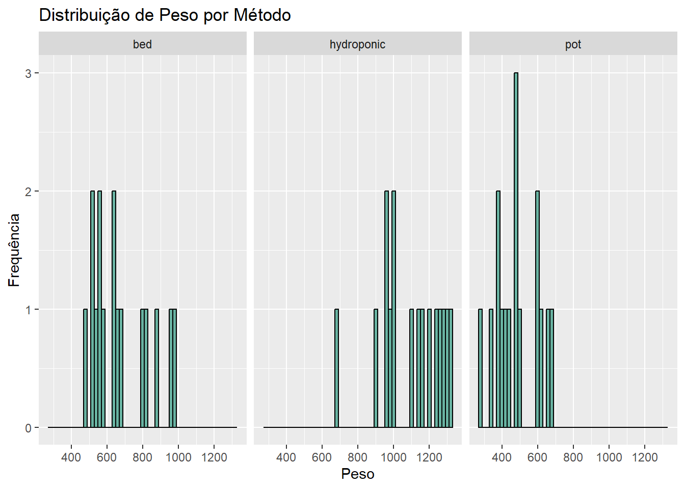
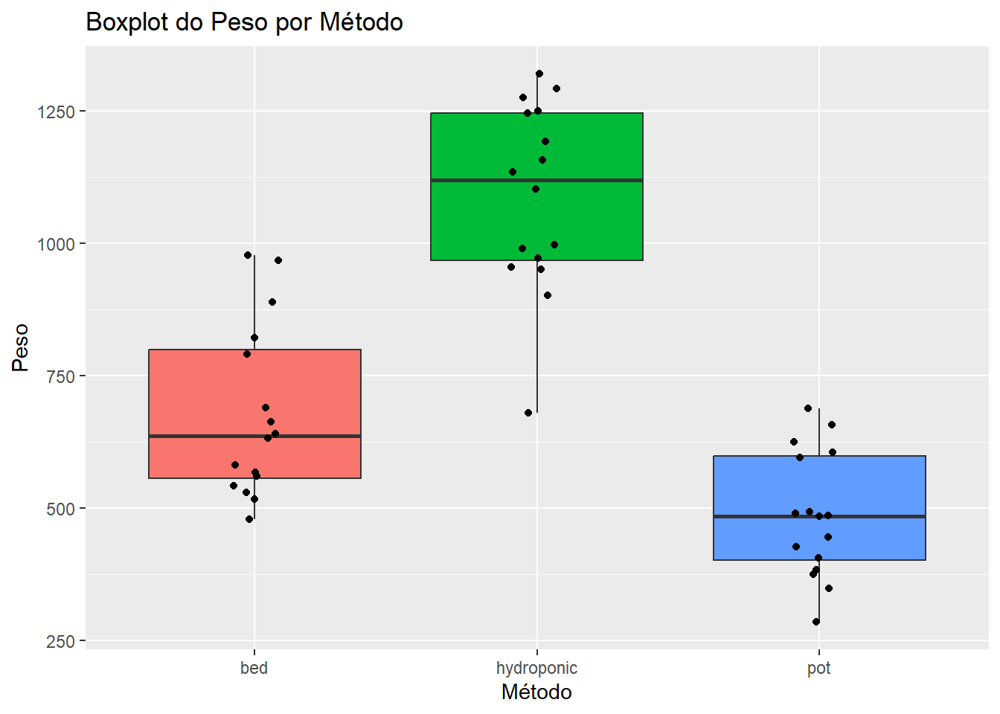
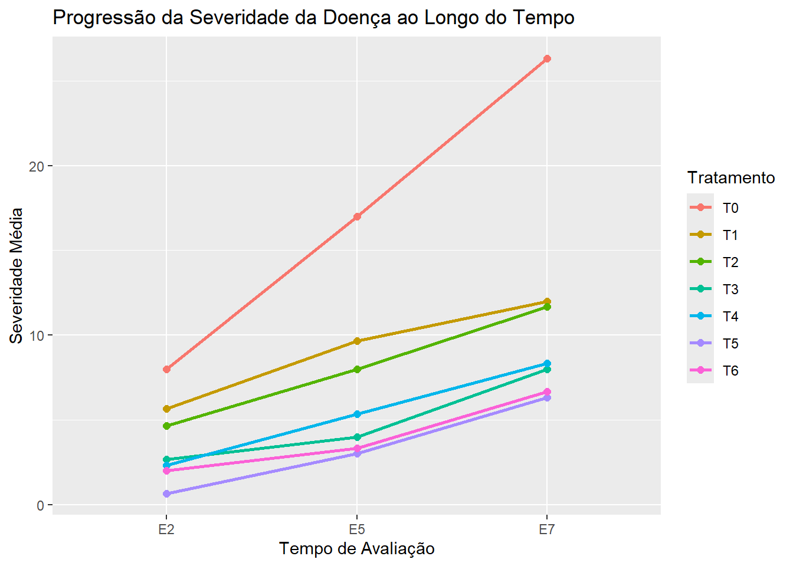
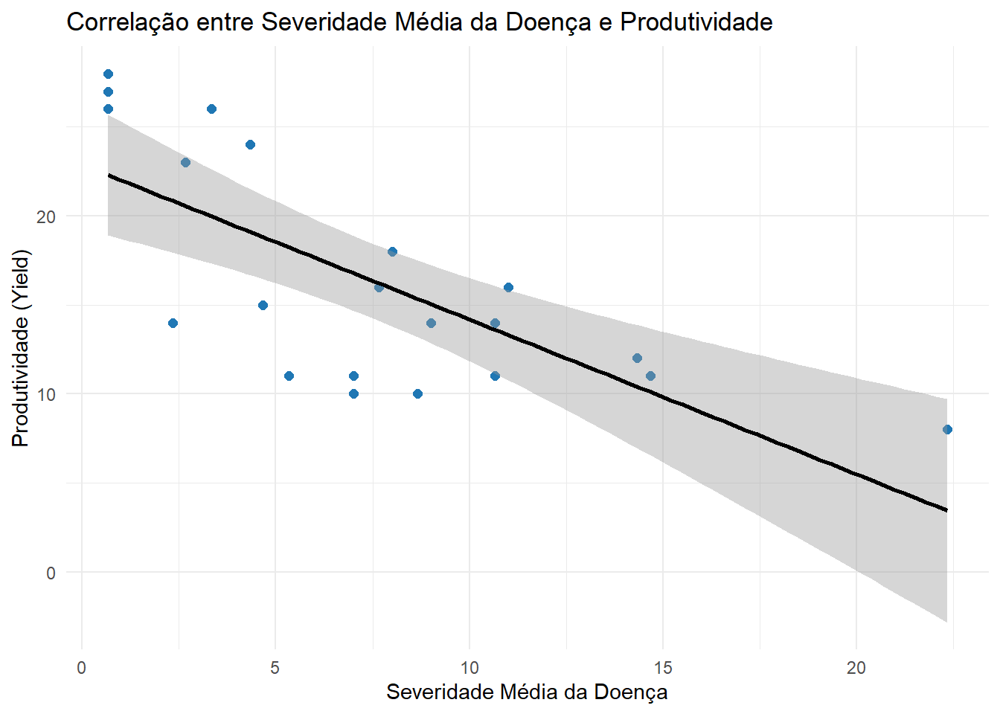

Análise exploratória consiste em um processo preliminar de investigação estatística em que se busca compreender o comportamento/distribuição do conjunto de dados. Através da avaliação da qualidade do conjunto, identificação de padrões, tendência, relações entre as variáveis e verificações de respectivas premissas que precisam ser atendidas em função dos métodos estatísticos a serem utilizados.
Conceitos principais
Sumarização estatística:
Tendência central: Auxilia na identificação da concentração dos dados.
Média: Medida sensível as valores do conjunto, obtida pela divisão da soma dos valores pelo número de elementos. Sendo assim um valor representativo do conjunto.
Mediana: Valor que separa a distribuição dos dados em 50%. Auxiliando na interpretação de distribuições assimétricas.
Moda: Valor que aparecem que com mais frequência.
Dispersão: Mede a variabilidade do dados em torno da tendência central.
Amplitude: Espectro de valores limitados pelos valores extremos
Variância: Dispersão em torno da média. Obtida pela média dos quadrados da diferença em relação a média.
Desvio padrão: Dispersão em torno da média na mesma undidade do conjunto de dados, facilitando a interpretação. Obtida pela raiz quadrada da variância.
Distribuição: Comportamento da frequência dos valores ao longo da amplitude
Simetria: Proporção/tendência da distribuição. Simétria ou assimétrica.
Modalidade: Caracterização em função dos picos de frequência. Unimodal, bimodal, multimodal.
Relação:
Correlação: Intesidade e direção da relação entre duas variáveis.
Tendências: Variação dos valores ao longo de uma dimensão.
# Importação de bibliotecaslibrary(agricolae)
Warning: pacote 'agricolae' foi compilado no R versão 4.5.1
library(tidyverse)
── Attaching core tidyverse packages ──────────────────────── tidyverse 2.0.0 ──
✔ dplyr 1.1.4 ✔ readr 2.1.5
✔ forcats 1.0.0 ✔ stringr 1.5.1
✔ ggplot2 3.5.2 ✔ tibble 3.3.0
✔ lubridate 1.9.4 ✔ tidyr 1.3.1
✔ purrr 1.0.4
── Conflicts ────────────────────────────────────────── tidyverse_conflicts() ──
✖ dplyr::filter() masks stats::filter()
✖ dplyr::lag() masks stats::lag()
ℹ Use the conflicted package (<http://conflicted.r-lib.org/>) to force all conflicts to become errors
# Input de conjunto de dadosdata("greenhouse")Dataframe <- greenhouse[[2]]
Tendência central e Dispersão (Visualização Numérica)
Calculo das métricas de tendência central e dispersão
Tendência central e Dispersão (Visualização Gráfica)
Plotagem de gráficos (histograma e boxplot), permitem a visualização da tendência central e distribuição de forma mais intuitiva.
# Histogramaggplot(Dataframe, aes(x = weight)) +geom_histogram(binwidth =20, fill ="#69b3a2", color ="black") +facet_wrap(~ method) +labs(title ="Distribuição de Peso por Método",x ="Peso",y ="Frequência" )

# Boxplotggplot(Dataframe, aes(x = method, y = weight, fill = method)) +geom_boxplot() +geom_jitter(width=0.1)+labs(title ="Boxplot do Peso por Método",x ="Método",y ="Peso" ) +theme(legend.position ="none")

Tendência ao longo da dimensão tempo
# Gráfico de linha das médias por tratamento ao longo das avaliaçõesdata(disease)Disease <-pivot_longer( disease,cols =c(E2, E5, E7),names_to ="Evaluation",values_to ="Severity")Disease$Evaluation <-factor(Disease$Evaluation, levels =c("E2", "E5", "E7"))ggplot(Disease, aes(x = Evaluation, y = Severity, group = trt, color = trt)) +stat_summary(geom ="line", fun = mean, size =1) +stat_summary(geom ="point", fun = mean, size =2) +labs(title ="Progressão da Severidade da Doença ao Longo do Tempo",x ="Tempo de Avaliação",y ="Severidade Média",color ="Tratamento" )
Warning: Using `size` aesthetic for lines was deprecated in ggplot2 3.4.0.
ℹ Please use `linewidth` instead.

Avaliação da correlação entre severidade e produtividade
Disease <- disease %>%mutate(severity_mean =rowMeans(select(., E2, E5, E7)))Correlation <-cor(Disease$severity_mean, disease$yield, method ="pearson")print(paste('Correlação entre produtividade e severidade: ', Correlation))
[1] "Correlação entre produtividade e severidade: -0.72490150241725"
ggplot(Disease, aes(x = severity_mean, y = yield)) +geom_point(color ="#1f77b4", size =2) +geom_smooth(method ="lm", se =TRUE, color ="black") +labs(title ="Correlação entre Severidade Média da Doença e Produtividade",x ="Severidade Média da Doença",y ="Produtividade (Yield)" ) +theme_minimal()
`geom_smooth()` using formula = 'y ~ x'

Comparação dos tratamentos
Como um exemplo mais aplicados utilizamos a função audpc() da biblioteca agricolae. Que permite o cálulo da área abaixo da curva da severidade ao longo do tempo, assim podemos comparar o resultado entre os tratamentos e identificar quais sofreram menor severidade durante o período avaliado. Como 3 repetições por tratamentos iremos comparar a média entres as repetições de cada tratamento, enquanto o desvio padrão entre as repetições pode nos fornecer uma idea da variação entre as repetições auxiliando a investigar se em alguma avalição houve valores muito discrepantes.